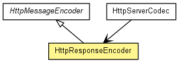

org.jboss.netty.handler.codec.http
Class HttpResponseEncoder
java.lang.Object
 org.jboss.netty.handler.codec.oneone.OneToOneEncoder
org.jboss.netty.handler.codec.http.HttpMessageEncoder
org.jboss.netty.handler.codec.http.HttpResponseEncoder
org.jboss.netty.handler.codec.oneone.OneToOneEncoder
org.jboss.netty.handler.codec.http.HttpMessageEncoder
org.jboss.netty.handler.codec.http.HttpResponseEncoder
- All Implemented Interfaces:
- ChannelDownstreamHandler, ChannelHandler
public class HttpResponseEncoder
- extends HttpMessageEncoder

Encodes an HttpResponse or an HttpChunk into
a ChannelBuffer.
- Version:
- $Rev: 2118 $, $Date: 2010-02-01 17:32:18 +0900 (Mon, 01 Feb 2010) $
- Author:
- The Netty Project, Andy Taylor (andy.taylor@jboss.org), Trustin Lee
| Methods inherited from class java.lang.Object |
clone, equals, finalize, getClass, hashCode, notify, notifyAll, toString, wait, wait, wait |
HttpResponseEncoder
public HttpResponseEncoder()
- Creates a new instance.
encodeInitialLine
protected void encodeInitialLine(ChannelBuffer buf,
HttpMessage message)
throws Exception
- Specified by:
encodeInitialLine in class HttpMessageEncoder
- Throws:
Exception
Copyright © 2008-2011 JBoss, a division of Red Hat, Inc.. All Rights Reserved.